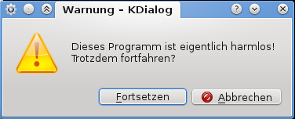

KDialog
Dieser Artikel wurde für die folgenden Ubuntu-Versionen getestet:
Ubuntu 16.04 Xenial Xerus
Zum Verständnis dieses Artikels sind folgende Seiten hilfreich:
Wer kleine Skripte schreibt und nutzt, möchte Rückmeldungen oder Fragen des PCs in manchen Fällen auch optisch ansprechend gestalten. Benutzerabfragen in einem eigenen Dialog anzuzeigen, wäre da ein erster Schritt. Für KDE bzw. Qt-Dialoge gibt es dafür das Programm kdialog, welches standardmäßig über das Paket kdebase-bin installiert ist und nicht extra installiert werden muss. (Für GNOME bzw. GTK-Dialoge gibt es das Programm Zenity mit ähnlicher Funktionalität.)
Anhand eines kleines Skriptes sollen die Möglichkeiten des Programms aufgezeigt werden.

Beispielskript¶
Das Beispielskript ist recht simpel aufgebaut: Es soll zuerst eine Warnung zum Programm angezeigt werden, dann wird vom Benutzer eine Texteingabe und eine Passworteingabe gefordert und alles am Ende wieder angezeigt. Die Quellcodezeilen sind nummeriert, um sie später besser erklären zu können.
Allgemeine Informationen¶
Zuvor ein paar allgemeine Informationen zur Shell-Programmierung: Die erste Zeile eines Skriptes muss immer das Shebang #! inclusive Pfad zum Skriptinterprter (hier /bin/sh) beinhalten. Die if-then-Konstrukte werden benutzt, um festzustellen, ob der Benutzer auf "Abbrechen" bzw. "Nein" geklickt hat. Der Befehl exit beendet in so einem Fall das Skript. Ein \n in einer Textzeile sorgt für einen Zeilenumbruch. Die Variablenzuweisung mit = kann später per $ wieder ausgelesen werden.
Mehr Informationen zu Skript-Befehlen findet man im Artikel Shell/Bash-Skripting-Guide für Anfänger
Quellcode¶
Folgenden Text gibt man (ohne Zeilennummern!) in einem Editor [1] ein:
1 2 3 4 5 6 7 8 9 10 11 | #!/bin/bash if ! kdialog --warningcontinuecancel 'Dieses Programm ist eigentlich harmlos!\nTrotzdem fortfahren?'; then exit; fi if ! NAME=$(kdialog --inputbox 'Bitte geben Sie Ihren Namen ein:' --title 'Wer sind Sie?'); then exit; fi if ! PASS=$(kdialog --password 'Bitte geben Sie das Passwort ein:' --title 'Und das Passwort?'); then exit; fi kdialog --msgbox 'Ihr Name: '$NAME'\nIhr Passwort: '$PASS --title 'Das Ergebnis!' |
Nun wird das Skript abgespeichert, als Dateiendung wählt man .sh (beispielsweise test_01.sh). Nachdem die Skript-Datei ausführbar gemacht wurde[2], kann man das Skript in einem Terminal per
./test_01.sh
starten.
| Erläuterungen | |
| Zeile | Bedeutung |
| 3 | Die Option --warningcontinuecancel zeigt eine Warnung mit den Optionen "Fortsetzen" und "Abbrechen" an. Der folgende Text in Hochkommas wird ausgegeben. \n bewirkt einen Zeilenumbruch innerhalb des Textes. |
| 7 | Die Option --inputbox zeigt ein Texteingabefeld mit den Optionen "Ok" und "Abbrechen" an. Mit der Option --title kann der Fenstertitel bestimmt werden. |
| 11 | Die Option --password zeigt wieder ein Texteingabefeld. Der Unterschied zu --inputbox besteht darin, dass eingegebener Text verschlüsselt dargestellt wird. |
| 15 | Am Ende wird per --msgbox ein Informationsfenster mit den eingegebenen Daten angezeigt. |
Fortgeschrittenes Beispiel¶
Es wird mittels dd eine CD / DVD in eine Iso-Datei kopiert. Es wird der K-Dialog Fortschrittsbalken verwendet um den Verlauf des dd-Kopiervorganges anzuzeigen. Eine gründliche Lektüre des Artikels Shell/Umleitungen ist für das Verständnis hilfreich.
Quellcode¶
Folgenden Text gibt man (ohne Zeilennummern!) in einem Editor [1] ein:
1 2 3 4 5 6 7 8 9 10 11 12 13 14 15 16 17 18 19 20 21 22 23 24 25 26 27 28 29 30 31 32 33 34 35 36 37 38 39 40 41 42 43 44 45 46 47 48 49 50 51 52 53 54 55 56 57 58 59 60 | #!/bin/bash #schritt1: Admin-Rechte einholen kdesudo --caption "für Root Rechte" -u root --comment "Bitte Passwort eingeben um Exclusivzugriff auf das DVD-Laufwerk zu erhalten" sudo /bin/echo "Root Passwort eingeben" if [[ $? -ne 0 ]]; then kdialog --error "Drei mal falsches Passwort. Abgebrochen" exit 1 fi #schritt2: auf eingelegte DVD prüfen if ! grep -q '/dev/sr0' /etc/mtab > /dev/null 2>&1; then kdialog --caption "Keine Disk" --error "Keine CD oder DVD im Laufwerk! Abbruch..." exit 2 fi #schritt3: Speicherort für Iso erfragen filename="$(kdialog --caption 'Bitte DVD Name (mit Endung .iso) angeben' --getsavefilename ~ "*.iso")" if [[ $? -ne 0 ]]; then kdialog --caption "Abgebrochen" --sorry "Abgebrochen durch Benutzerwunsch" exit 3 fi #schritt4: check ob Dateiname auf .iso endet echo "$filename" | grep '.iso$' if [[ $? -ne 0 ]]; then #tut er nicht, anhängen filename="$filname.iso" kdialog --caption "Problem Dateiendung" --warningcontinuecancel "Der gewählte Dateiname zum Speichern endet nicht auf .iso, es wurde ein daher .iso als Dateiendung angehängt. Der neue Speicherpfad lautet: $filename" if [[ $? -ne 0 ]]; then kdialog --caption "Abgebrochen" --sorry "Abgebrochen durch Benutzerwunsch" exit 4 fi fi #schritt5: ermitteln der Disk-Größe disksize=$(blockdev --getsize64 /dev/sr0) #schritt6: erzeugen des Kopierdialoges mit Progressbar dbusRef=$(kdialog --caption "läuft im Hintergrund" --title "Kopiervorgang" --progressbar "Die Disc wird im Hintergrund nach $filename kopiert." 100) #schritt7: #cdlaufwerk als root einleisen #an programm "pv" pipen #dort mittels Parameter -n den bereits erhaltenen Prozentwert der $disksize ermitteln und in &3 speichern #stdout ist das mittels dd eingelesen, dies wird weiter gepiped an dd zum ausgeben als datei # &3 wird zum stdout und weitergepiped an xargs und als qdbus %-Wert für den Progressbar genommen sudo dd if=/dev/sr0 | { pv -s $disksize -n 2>&3 | dd of="$filename"; } 3>&1 | xargs -I{} qdbus $dbusRef Set org.kde.kdialog.ProgressDialog value {} #schritt8: Fortschrittsanzeige wieder schließen qdbus $dbusRef org.kde.kdialog.ProgressDialog.close #schritt9: Benachrichtigen des Users und Frage nach Auswerfen kdialog --caption "Disk auswerfen?" --title "Kopieren beendet" -yesno "Der Kopiervorgang ist beendet. Disc auswerfen?" if [[ $? = 0 ]]; then sudo umount /dev/sr0 sudo eject /dev/sr0 fi exit 0 |
Weitere Optionen¶
| Weitere Optionen | |
| Option | Aktion |
--msgbox | Information |
--warningyesno--warningcontinuecancel--warningyesnocancel | Warnung |
--error | Fehler |
--yesno--yesnocancel | Frage |
--passivepopup | Passives Popup (schließt automatisch) |
--inputbox | Texteingabe |
--getopenfilename--getsavefilename | Dateiauswahl |
--combobox--checklist--radiolist | Listenauswahl |
--progressbar | Fortschrittsanzeige |
--password | Passwort |
Dies ist natürlich nur ein Teil von dem, was KDialog kann. Genaueres erfährt man im Terminal per
kdialog --help
oder in der Manpage von KDialog.

- Erstellt mit Inyoka
-
 2004 – 2017 ubuntuusers.de • Einige Rechte vorbehalten
2004 – 2017 ubuntuusers.de • Einige Rechte vorbehalten
Lizenz • Kontakt • Datenschutz • Impressum • Serverstatus -
Serverhousing gespendet von